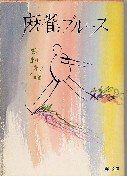
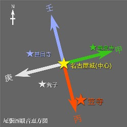

（157）ナゴヤ弁講座
|
といっても、“なも”とか“そうだがね”の話ではない。いちおう麻雀ナゴヤ弁。もっともすべて標準語？に押されて死語になりつつある。
田村光昭、通称 タミーラの「麻雀ブルース（角川文庫）」で紹介されて有名になったのが“へい”。といっても「へい、そうでおま」の“へい”ではない。それじゃあ大阪弁。麻雀ブルースでは次のように記述されている。

おもしろいのは着順位の呼称で、三人沈みを「サンヘイ」、二人は「ニヘイ」、そして一人の場合を「イチヘイ」。
「なんでサンヘイっていうのかなあ」と聞いてみると、「いやね、こちらではヘコむことをヘイというんだ。だから三人沈みならサンヘイ、まあこういう具合だがね」
名古屋風に打ち馴れてしまえばそうでもないが、最初打っていて抵抗があったこと。
ま、名古屋人のはしくれとして少し弁解しておくと(^-^；、本来、“ヘイ”は“ヘイ”ではなくて“ヘ”。要するに、“三凹（さんへこ）み、略して“さんへ”。それが語呂で“さんへー”になったもの。
それにこれは名古屋のブーマン用語であって、通常の麻雀ではほとんど使われなかった。いや、通常麻雀でもたまに「サンペコ」という表現は使われていたが、「にペコ」とか「いちペコ」という表現は使われていなかった。これは単純に語呂が悪かったせいだろう。
次に有名？なのが、「伏(ふ)せ」。これはリーチの意味であるが、リーチしてから手牌を伏せることから来ている。そこでリーチのときは、「伏せっ！」と宣言していた。ダブルリーチはリーチ二つ分なので「リーチ伏(ぶ)せ」。名古屋地方では昭和40年代後半までけっこう普通に使われていた。しかしいまでは、やはり死語の世界。
“恵方（えほう）”という言葉がある。方位神の一つに「歳徳神（としとくじん）」という神サマがある。この神さま、なぜか知らないけれど毎年、東西南北のどこかに移動する。その歳徳神が鎮座している方角は縁起がいいというので、その方角を恵方（えほう＝縁起の良い方角）という。
節分のとき（といっても立春に限るようだが）、この恵方を向いて太巻寿司を丸かぶりする。するとその１年、良いことがあるという。なんで丸かぶりなのか知らないけれど、どうやら「縁を切らない」ということらしい。
その頃になると名古屋でも東京でも、コンビニが「恵方を向いて丸かぶりしよう！」といって太巻寿司の売り出しキャンペーンを始める。しかしこれはもともと大阪の風習らしい。たぶんバレンタインチョコと同じで、コンビニの売り上げ増強作戦なんだろう。
で、麻雀で「高め」は“良い方”という。“良い方”はナゴヤ弁で「ええ方」という。そこでナゴヤでは高めがでると“ロン、ええ方！”。そして“ええ方”は“恵方”に語呂が似ている。そしてナゴヤには東西南北に「歳徳神」も祀った尾張四観音というのがある。

東が竜泉寺（りゅうせんじ）、西が荒子観音（あらこかんのん）、南が笠寺（かさでら）、北が甚目寺（じもくじ）。そして名古屋城から笠寺方向に行った所には恵方町という町もある。そこでσ(-_-)たちが学生の頃は、高めがでると“ロン、恵方町！”ともやってた。しかしこんな表現も、いまは廃れてしまった。別に廃れたって構わないけど、いまでも恵方町の近くを通りかかると学生時代を思い出す。
|
なーだ 投稿日：2006/05/15(Mon)
「恵方町（クラブ）」（なぜかクラブまでつけるおやじがいた）
「伏せ」などは１５年位前までは名古屋の雀荘でよく耳にしていましたよ。
今は・・・聞かん（笑）
|
あさみ 投稿日：2006/05/15(Mon)
> 「恵方町（クラブ）」（なぜかクラブまでつけるおやじがいた）
へ〜、それは知らなかった。恵方町あたりに、そういう名前の雀荘がじっさいにあったのかな？。
それにしてもツモアガリしたオヤジが牌をバシッと卓に叩きつけて「恵方町！」とわめくと、（チェッ、高めをツモられたか...）とがっかりしたね。(笑)
そういえばもう一つ、「振りテン、アルナシ」ってのを思い出したぞ。これはシャボマチであるが、片方が振りテンになっているときのリーチ宣言。
リーチ成立初期のルールでは、「振りテン、アルナシ」と宣言すれば、振りテンじゃない方が出たときはロンアガリできた。もちろん振りテンの方が先に出た場合、ロンアガリできない。しかしその後で振りテンじゃない方が出た場合、ロンアガリできた。
「振りテン、アルナシ」宣言は、名古屋弁というより古いルールがナゴヤでは生き残っていたという感じ。昭和40年代初め、はじめてこの宣言というかルールでゲームをやらされたとき、ちと驚いたのを覚えている。＃某スナックバーの女性オーナー宅での麻雀だった。
σ(-_-)が最後にこの宣言を聞いたというか、このルールでゲームしたのは昭和45年（'70）くらいの記憶。ナゴヤでもいつ頃まで行われていたのか知らないけれど、たぶん昭和50年には絶滅してたかも。
|